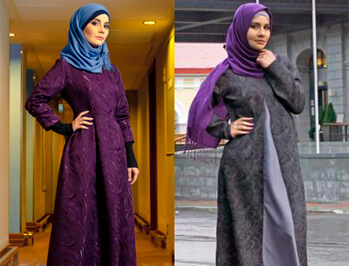

حصري :تلقينا تقريرًا من ريهام ينطوي على تفاصيل تتعلق بقصة مؤثرة عن فقدان الوزن، لذلك قرر محررونا التحقق من كل تفاصيل منتج خصيصا لقرائنا للتأكد مما إذا ما كان فعالاً كما قيل أم لا.
تلقينا تقريرًا من ريهام وبه تفاصيل تتعلق بقصة مؤثرة عن فقدان الوزن، لذلك قرر محررونا التحقق من كل تفاصيل منتج خصيصا لقرائنا لتتأكد ما إذا ما كان فعالا كما قيل أم لا.
الصحفية ريهام
تستكشف إجراءات فقدان الوزن غير الاعتيادية بما اشتهر في بلدنا.
.(صحة الأم)
في الأشهر الثلاثة الماضية كان قراؤنا مشغوفين جدا يتطلعون إلى معرفة هذه الصرعة الجديدة في الإنترنت وهي لقد ساعد آلاف النساء حول العالم على خفض أوزانهن بشكل هائل وقضى على دهون البطن. هذا النظام الثوري في فقدان الوزن يسمى "الكأس المقدسة لفقدان الوزن" صار محلا للنقاش في العديد من البرامج التليفزيونية ثم تبين أن الأداة هي وهي طبيعية مائة من المائة وفي المتناول أيضا في الوقت نفسه.
تمكنت Vicky Pattison و Jessica Simpson و Ricky Gervais و Jonah Hill وغيرهم من المشاهير حول العالم من إنقاص الوزن بمساعدة حمية الكيتو وهذا المشروب. أثبتت فعالية سريريا. يساعدك على الدخول في الحالة الكيتونية بشكل أسرع، ويحرق الدهون بنشاط، ويحسن صحتك، ويسرع عملية الأيض. لا تحتاج إلى اتباع نظام غذائي صارم مع . كل ما عليك فعله هو التقليل من الحلويات والمخبوزات. ستظل تفقد الوزن ولن يعود الوزن.
وفي الغالب يثبت في تحقيقاتنا فيما يتعلق بمختلف طرق فقدان الوزن أن هذه العملية في حد ذاتها مهمة صعبة جدا والنتائج تكون في الغالب صغيرة أو مؤقتة.
ومع ذلك، فبعد بحوث ومقابلات موسعة مع من تناولوا أدركنا أن هذا تطور مهم بالفعل في الأنظمة الغذائية. اقرأ واعرف بنفسك السبب في أننا خصصنا عددا محددا لهذه الطريقة.
آخر الأخبار
الكثيرون لا يفقدون الوزن بسبب نقص مكونات معينة في وجبتهم!
بخلاف الإضافات الحديثة يستطيع فعل العجائب فيما يخص خفض الوزن وتصحيح شكل الجسم. فالمزج بين هذا المنتج والحمية الصحية يمكن أن يُفقدك 40 رطلا في شهرين.
يحتوي على مالتوديكسترين، وفحم منشط، وقهوة طبيعية، و L-carnitine، وخلاصة جوز الهند، وبيكولينات الكروم. المشروب متوافق مع حمية الكيتو، ويعزز آثاره، ويسرع النتائج.
ما يقوله الآخرون
 كل أصدقائي أخبروني عن
لطالما كنت أعاني من مشكلات زيادة الوزن منذ ان كنت في المدرسة ولك أن تتخيل لكثير من السنين التي حلمت
فيها بأن أصير ذا شكل جيد مثل أصدقائي النحفاء. وعملا بوصاياهم جربت ولن أغيره أبدا أو أستبدله. فبعد تجربتي مع صرت قادرًا على فقدان 24 رطلًا. ولأول مرة صار شكلي الآن
جميلا ببساطة وأحببت جسمي الجديد!
آلاء عمارة اقرأ المزيد >>>
بعد عيد ميلادي العشرين بدأت أعاني من مشكلات زيادة الوزن حيث صرت سمينا بعدما كنت
شابا نحيلا ووسيما. بدأت أذهب إلى الجيم وأوصاني مدربي بشرب الكثير من المياه وتناول مرتين يوميا وكانت النتائج مؤثرة جدا حيث فقدت 28 رطلا في
أربعة أسابيع. شكرا جدا!
أيمن السروي اقرأ المزيد >>>
لأني أم لثلاثة أطفال فإني كل يوم أجد نفسي موزعة المجهود بين العمل والأطفال ومليون
شيء آخر...
في يوم ما أعطاني أحد الأصدقاء وبدأت
بالفعل أخسر وزني في أول أسبوع ثم بعد شهر لم أصدق أني صرت ما ظللت طوال عمري أحلم به. شكرا على كل شيء!
أنت معجزة!
إيمان اقرأ المزيد >>>
جربه الآن!

تقول سناء "لقد خسرت 26 رطلا!"
اشترِ
لماذا لا تعمل الحميات الغذائية؟ السبب الأول هو أنه لا يمكنك اتباعها مدى الحياة. لا يمكنك التخلي عن الكربوهيدرات أو البروتينات أو الدهون إلى الأبد، ولا تأكل أبدًا قبل النوم، وما إلى ذلك.
في هذا العدد الخاص، سنخبرك بكيفية إنقاص الوزن بشكل جذري تقريبًا دون تغيير عاداتك الغذائية. باستخدام هذه الطريقة، لن تضطر بعد الآن إلى إرهاق نفسك بالتمارين البدنية. الأهم من ذلك أنها ستعمل بنسبة 100%.
ربما سمعت عن مشروب keto للتخسيس على شاشة التلفزيون. يحتوي على مالتوديكسترين، بيكولينات الكروم، خلاصة جوز الهند، الفحم المنشط، و L-carnitine - كل ما يساعدك على حرق الدهون دون جوع.
كل هذه المكونات تهدف إلى حرق الدهون الزائدة وتسريع عملية الأيض.
تم اختبار في جامعة كاليفورنيا، لوس أنجلوس. ثبت أن المشروب يمتص الكربوهيدرات الزائدة ويلتصقها ويزيلها ويضع الجسم في حالة من الكيتوزية (تجويع الكربوهيدرات). نتيجة لذلك، يتم حرق الدهون بشكل أسرع بنسبة 318% وبالتالي تفقد الوزن بشكل فعال.
ومع ذلك فالمشكلة هي أنه بعد نجاح ظهرت الكثير من النسخ الزائفة في السوق وهي غير فعالة بالمرة مقارنة بالأصل.
لكن الأصلي قد فاق في كفاءته بأكثر مما كنا نتوقع. كما أن الأشخاص الذين تناولوا كانوا قادرين على خفض أوزانهم بشكل كبير وصاروا نشيطين جدا ومفعمين بالحيوية. لكنك لو كنت مرتابًا في هذا فأنت لست وحدك. لقد كنا جزءا من ذلك عندما سمعنا عن هذه الأخبار الرائعة في خسارة الوزن ولم نصدق في التو واللحظة.
ومع ذلك، فبعد أن قررنا أن هذا الاتجاه العام يستحق عنايتنا بدأنا بالفعل دراسة قصص الأشخاص الذين خسروا الوزن بفضل وكنا مهتمين بشكل خاص بحقيقة أن هؤلاء الأشخاص لم يكونوا مضطرين إلى تغيير نمط حياتهم.
نتائجي خسرت أكثر من 25 رطلًا في شهر فقللت تقريبا 3 مقاسات في لبسي وأنا أصرخ من الفرحة-
الأسبوع الأول:
بعد أسبوع واحد فقط، بدأ تطبيق . إنه سريع جدا! إنه يمنحني القوة: لقد تمكنت من فعل المزيد وتناول كميات أقل. قلّت شهيتي للطعام، ولم أعد أحب الحلوى.
شعرت شعورا عظيما.
لكن الأهم أنين لم أغير أي شيء في نمط حياتي. في اليوم السابع صعدت الميزان ولم أكد أصدق عيني حيث خسرت 10 أرطل. لكني منعت نفسي من المبالغة في التحمس لأني قيل لي إن أول ما يتم القضاء عليه هو زيادة السائل من الجسم ولذا قررت أن أرى ما يحدث لاحقا مع وزني.
الأسبوع الثاني:
بعد الأسبوع الثاني صرت أكثر نشاطًا وتحسن مزاجي. كانت هناك ميزة أخرى هي أني بدأت أنام بشكل أحسن ولم أستيقظ مرة أخرى في منتصف الليل. وعلاوة على ذلك بقي لي فقط أربعة أرطال بعدما خسرت 14 رطلا في أسبوعين وهنا بدأت أفهم أن ليس فقط خدعة إعلانية بل هو علاج فعال في الحقيقة.
الأسبوع الثالث:
بعد ثلاثة أسابيع زالت كل شكوكي وفقدت أربعة أرطال أخرى وشعرت أني سوف أخسر كل ما أريد. صار النشاط يدب في أوصالي رغم أني في نهاية الأسبوع الثالث بدأ جسدي يشعر بالإرهاق، لكني مع تبين لي العكس: لقد صار أقوى. ملحوظة أخرى جيدة هي تحسن عملية الهضم وزوال الانتفاخات.
الأسبوع الرابع:
بعد الأسبوع ارابع صارت النتائج الأخيرة مذهلة فقد نقص وزني 24 رطلًا في كل شهر بفضل النتائج أيضا مذهلة بالفعل. وفي الهيئة التحريرية لمجلة صحة الأم هنأني الجميع وتحسروا على أنهم لم يجروا التجربة بأنفسهم. بالطبع أنا من جانبي لم يكن لدي وزن زائد ومن جانب آخر كنت سعيدة أن نحفت بشكل كبير وشعرت بطاقة أكبر.
بالطبع سوف أواصل تناول خصوصا أن العلاج يحتوي على الكثير من مضادات السموم وعلى الفيتامينات التي تؤجل الشيخوخة وتجعل الجلد أنضر.
مع جسمي النحيف الجديد أشعر بسعادة مطلقة.
فقد ناسبني فستان الزفاف جدا!
فقدت 4 أرطال في أربعة أسابيع بلا حمية خاصة أو تمارين.
ختامًا لو كنت ما تزال تشك في كفاءة فيجب عليك أن تصدق لا سيما بعد أن أظهرت الاختبارات أن النتائج حقيقية. في الهيئة التحريرية لمجلة صحة الأم درسنا أكثر من 100 حمية في السنة وحتى برغم الشكوك التي كانت لدينا في البداية إلا أنه سرعان ما صرنا مقتنعين أن فعال. وبعد استقصائنا يسعدنا أن نعلن أن الاختبار كان ناجحًا.
مهم : * خلال التجارب السريرية، تبين أنه لتحقيق نتائج مماثلة ينبغي استخدام المنتج بانتظام .
أيتها السيدات نحن في العادة لا نكتب تقارير عن هذا النوع، لكن هذا المنتج
يحمل من المنافع ما لا يجوز إخفاؤه عن الناس.
جربه وأخبرني عما تعتقده!
نحن متطلعون إلى معرفة
رأيك!
عدد المنتجات المعروضة محدود. الخصومات ما تزال متاحة
التعليقات:
سمر
مكتوبة من ساعة
سمعت عن هذا المنتج في التليفزيون لكني لم أعرف أين أستطيع أن أسأل. ولحسن الحظ وجدت بالصدفة هذا الموقع الذي يباع فيه المنتج بخصم. ثم إني على الأقل لن أدفع السعر الكامل في حال لم يكن نافعًا. رغم أني ما زلت أرجو أن أفقد الوزن به))
ريهام
مكتوبة من ساعة
أستمر في تأجيل نظامي الغذائي طوال الوقت، لكنني طلبت هذا المكمل اليوم. شكرا على الدعم! الآن، سأقوم بـ 30 تمرين قرفصاء احترامي ؛)
مجدي هاني
مكتوبة من ساعتين
لقد رأيت برنامجًا عن هذا على التلفزيون. أتساءل ما إذا كان مناسبة للرجال؟
رشا
مكتوب من ساعتين
أنا وزوجي طلبنا واختبرنا المنتج شكرا.
هاجر
مكتوبة من ساعتين
عرفت أمي بشأن هذا المنتج في العمل. وأعتقد أنه مفيد فعلا
سحر
مكتوبة من ثلاث ساعات
لقد طلبت منذ ثلاثة أسابيع على الرغم من نفاد المخزون. حالما حصلت عليهم، اندهشت من التأثير! لم أصدق أن المكملات الطبيعية يمكن أن تكون فعالة للغاية.
مريم
مكتوبة من ثلاث ساعات
هل هي طبيعية مائة بالمائة؟ سوف أجرب في هذه الحالة، لا تأخذوا أي منتج أو علاج كيماوي
رامي صابر
مكتوبة من أربع ساعات
لقد بدأت في تناول هذا المكمل منذ أسبوع، وأشعر بالفعل بالضوء والكامل بالطاقة.
دعاء
مكتوبة من أربع ساعات
لم أكن أتخيل أن بوسعك أن تحصل على تلك النتائج! طلبت العلاج بسبب رابطك!
عبير
مكتوبة من خمس ساعات
اشتريت الكثير من الأشياء على الإنترنت ولا يمكنني أن أصدق أني لم أسمع عن يا لها من حكاية مثيرة! شكرًا
أسماء
مكتوبة من خمس ساعات
لكن فقط من المُصنِّع الرسمي هنا النسخ الزائفة لن تفيد أبدًا
لبنى السيد
مكتوبة من خمس ساعات
لا أريد تفويت هذا العرض! أرسل الرابط من فضلك